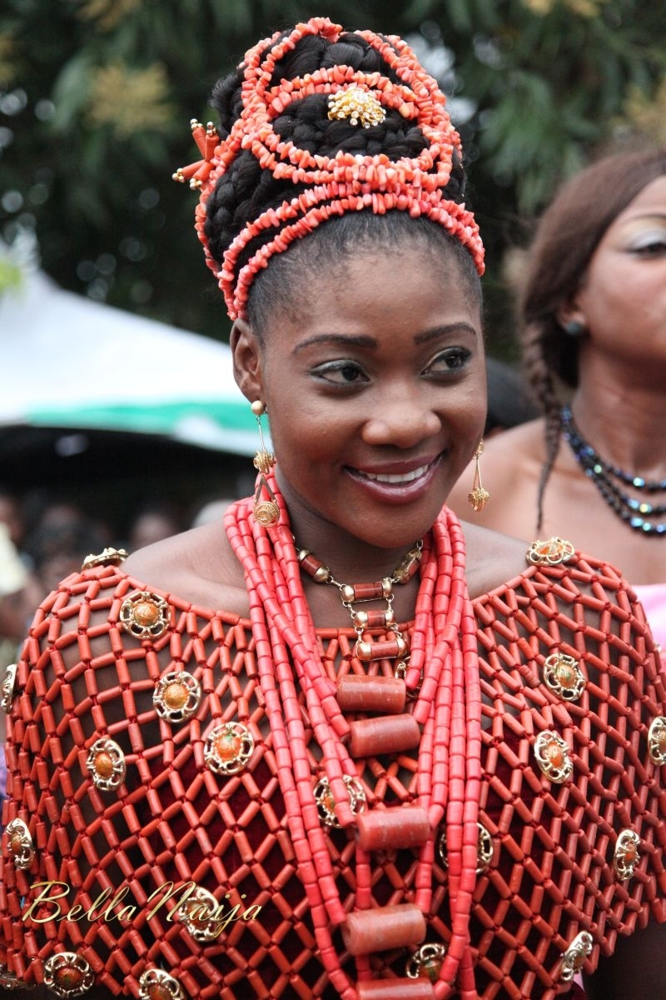
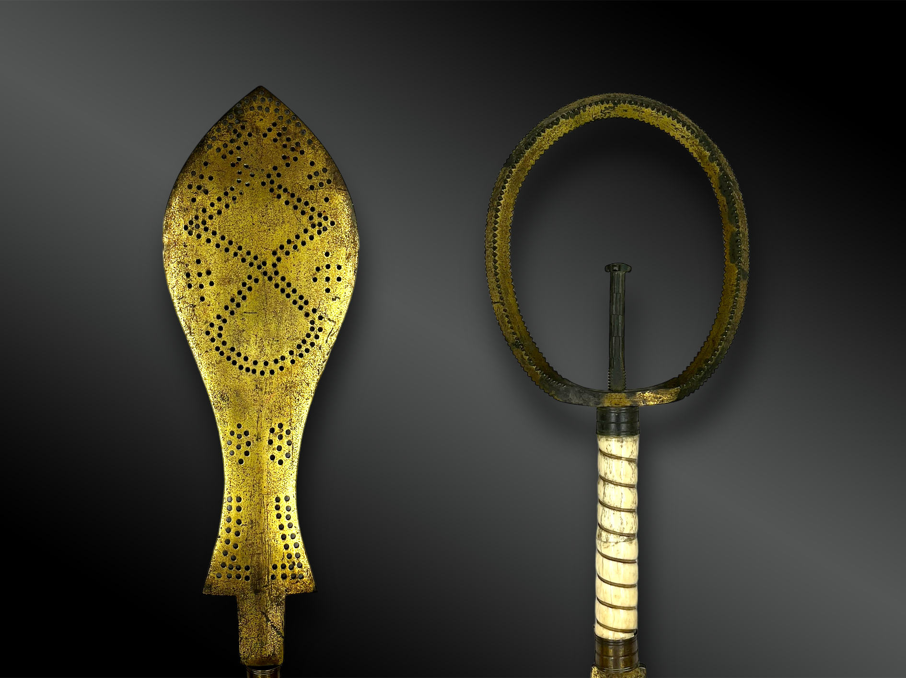
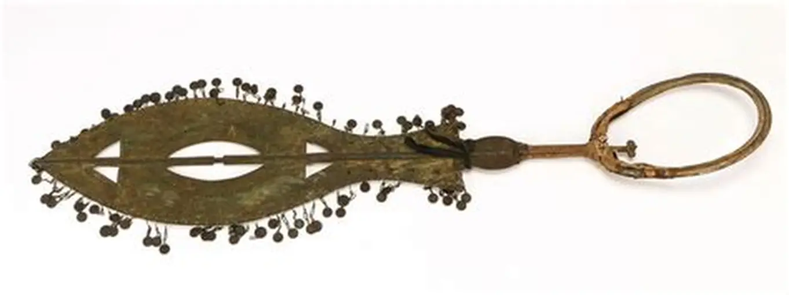
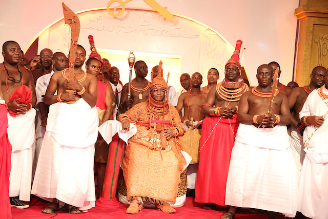
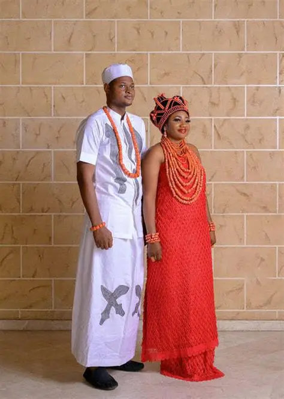
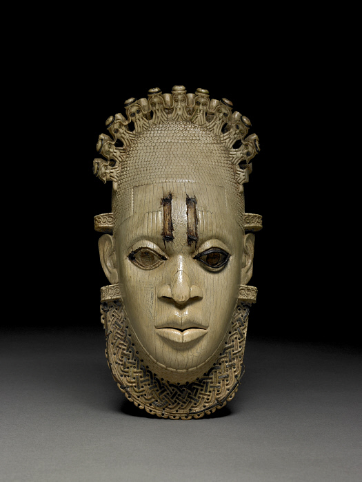
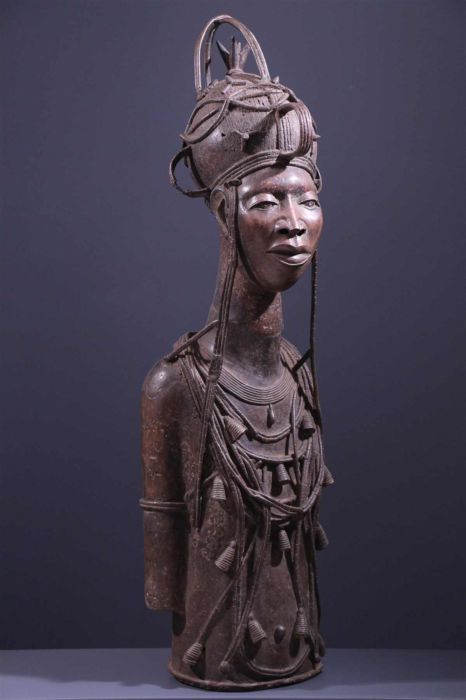
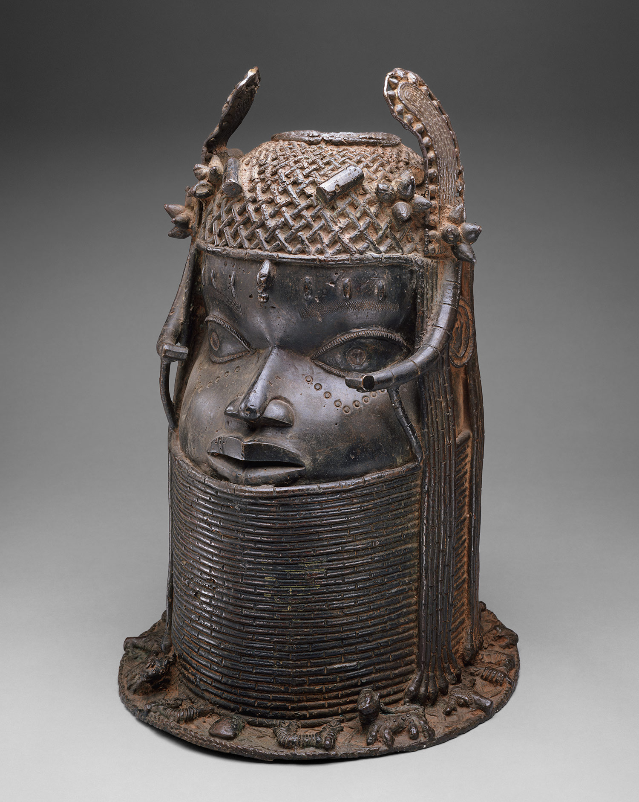

OUR CULTURE


These are the Edo people's jewellery,
coral beads,
named Ivie and Ekan


In Edo culture, the Eben sword symbolizes authority and loyalty. Carried by chiefs and palace officials during ceremonies, ornate blade is raised or swung to honor the Oba, representing power, respect, and royal service

Our Oba of Benin is the traditional and spiritual leader of the Edo people, he represents royalty, unity, and cultural heritage.

Edo men wear white shirts or robes with wrappers and coral beads, women wear velvet wrappers with coral bead crowns, and at weddings both dress in elaborate coral ensembles symbolizing unity and tradition.



Bronze and Ivory are precious royal material,
often placed on royal altars.